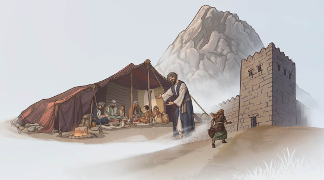

(Imin. 10)
Yehova ni nk’umunara ukomeye (Zab 61:3; it-2 1118 par. 7)
Yehova yemera kutwakira mu ihema rye (Zab 61:4; it-2 1084 par. 8)
Yehova ni nk’igitare (Zab 62:2; w02 15/4 16 par. 14)
IBAZE UTI: “Ni mu buhe buryo imibereho yanjye yarushijeho kuba myiza bitewe nuko namenye Yehova kandi nkaba mwiringira?”
(Imin. 10)
Zab 62:11 —Ni mu buhe buryo Imana ari yo ‘itanga imbaraga?’ (w06 1/6 11 par. 6)
Ni ibihe bintu by’agaciro byo mu Ijambo ry’Imana wasomye muri iki cyumweru wifuza kubwira abandi?
(Imin. 3) KUBWIRIZA MU BURYO BUFATIWEHO. Tangiza ikiganiro, ubwiriza umuntu ukugiriye neza. (lmd isomo rya 2 ingingo ya 3)
(Imin. 4) KU NZU N’INZU. Bwira umuntu urimo ubwiriza ibyerekeye porogaramu ya JW Library® kandi umwereke uko yayishyira mu gikoresho cye cya elegitoronike. (lmd isomo rya 7 ingingo ya 4)
(Imin. 5) w22.02 4-5 par. 7-10— Umutwe: Jya wiringira Yehova mu gihe uhawe amabwiriza. (th ingingo ya 20)
(Imin. 10) Ikiganiro. MUREBE VIDEWO hanyuma ubaze abateranye ikibazo gikurikira:
Ni gute Yehova yitaye ku muvandimwe Nyirenda igihe yatotezwaga?
(Imin. 5) Ikiganiro. MUREBE VIDEWO Maze niba bishoboka,
ubwire abana wahisemo baze kuri pulatifomu, ubabaze ibibazo bikurikira:
Ni ibihe bintu by’ingenzi umuntu wifuza kubatizwa yagombye gutekerezaho aho kwita ku myaka afite?
Ni ibiki wakora ngo ubatizwe?
(Imin. 30) bt igice cya 12 par. 7-13, n’agasanduku ko ku ipaji ya 97